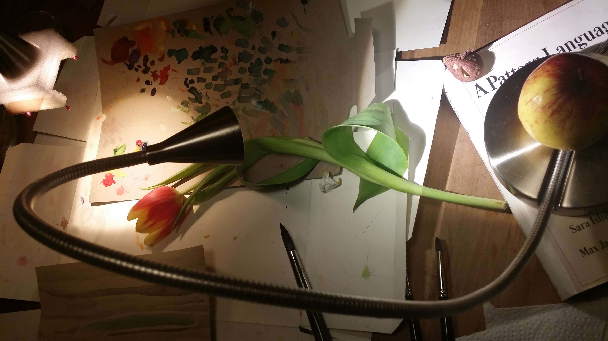

<?xml version="1.0" standalone="no"?>
<!DOCTYPE svg PUBLIC "-//W3C//DTD SVG 1.1//EN" 
  "http://www.w3.org/Graphics/SVG/1.1/DTD/svg11.dtd">
<svg>
  <image xlink:href="https://mdn.mozillademos.org/files/6457/mdn_logo_only_color.png"/>
</svg>


